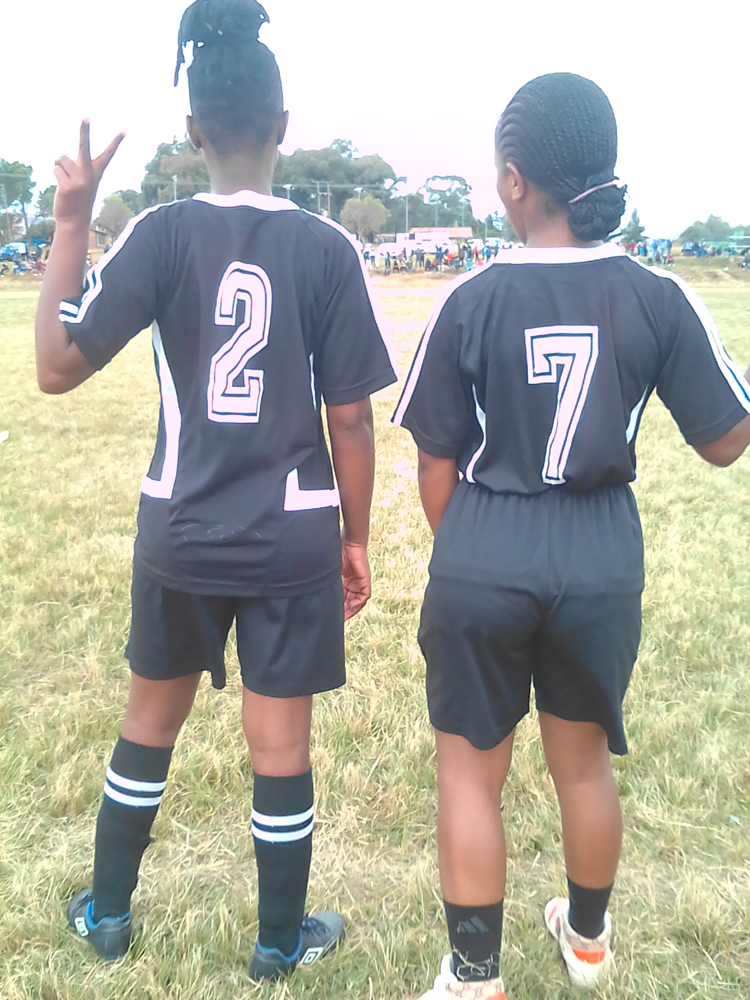
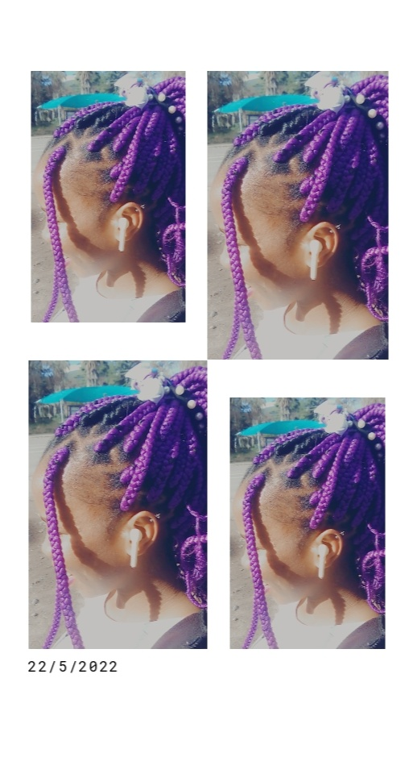

they say soccer is more like boys thing but to me...it is something that i cant live without...ground is my happiest place, it is my therapy place. I wear jersey number 7, thats the middlefield player and it needs someone who can run. whenever i am lonely or kinda sad, i go to the ground for healing. this keeps me motivated and it prevents me from a lot of things like drugs and alcohol, the free time that i get, i go to the ground and avoid my friend's evil plans.
 my other hobby is listening to music, singing along with the artists and dancing. every distance i walk, i always have my ear pods with me. this shortens my way and keeps me distracted all the way. i am not a great singer but with music pluged on, i can sing till you conclude i know how to sing.
home affable independent powerful hobbies